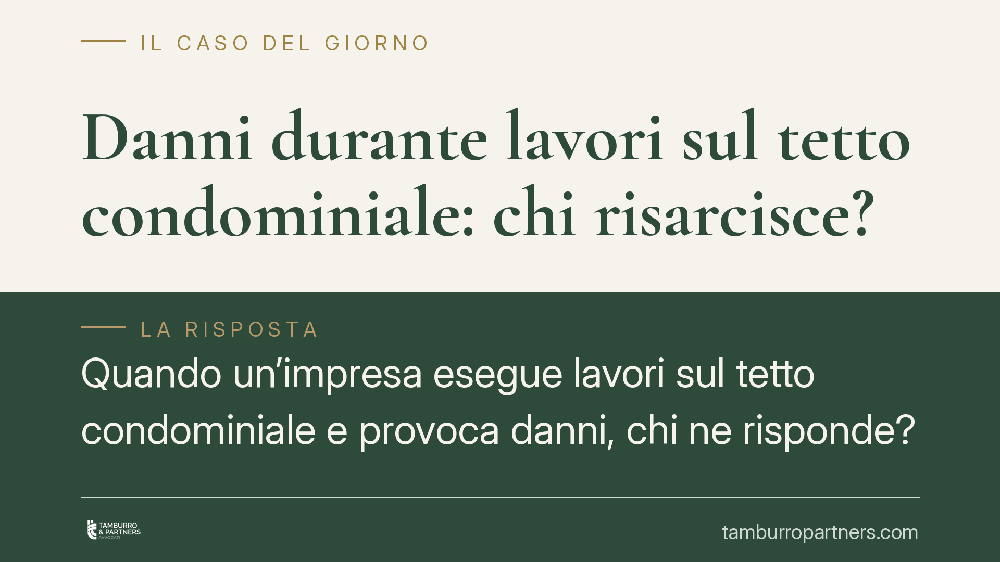

Danni durante lavori sul tetto condominiale: chi risarcisce?
Quando un'impresa esegue lavori sul tetto condominiale e provoca danni, chi ne risponde? Una recente pronuncia di merito ha ribadito che, durante il cantiere, la custodia della parte comune passa all'appaltatore, chiamato a rispondere dei danni. Un principio che ridefinisce il perimetro di responsabilità di condominio, amministratore e impresa.

Il caso
Durante lavori di manutenzione sul tetto di un edificio condominiale, l'attività dell'impresa appaltatrice provoca danni ad alcuni condòmini. La domanda ricorrente in questi contenziosi è: la responsabilità grava sul condominio, sull'amministratore o sull'impresa che materialmente esegue l'opera?
Una recente pronuncia di merito ha affrontato il tema individuando nell'impresa appaltatrice il soggetto tenuto al risarcimento, in ragione del controllo effettivo esercitato sul cantiere durante l'esecuzione dei lavori.
> Nota metodologica. Si tratta di una sentenza di merito e non di un arresto delle Sezioni Unite: il principio è persuasivo ma non vincolante per altri giudici. Gli estremi esatti della pronuncia vanno verificati prima di ogni utilizzo in sede difensiva.
Inquadramento normativo
Il fulcro è l'art. 2051 cod. civ., che disciplina la responsabilità per danni cagionati dalle cose in custodia. La nozione di *custodia* non coincide con la proprietà: rileva il potere di fatto sulla cosa, cioè la possibilità concreta di governarla, vigilarla e intervenire per evitare che produca danni. Chi ha questo potere risponde, salvo la prova del caso fortuito.
Qui sta il punto decisivo. Quando il condominio affida i lavori a un'impresa e questa prende possesso della porzione di edificio interessata dal cantiere, il potere di fatto sulla cosa si trasferisce all'appaltatore. È l'impresa, in quel momento, a poter controllare e neutralizzare i rischi. Di conseguenza, la custodia — e con essa la responsabilità ex art. 2051 c.c. — passa all'impresa.
Si affianca l'art. 2049 cod. civ., secondo cui i *padroni e committenti* rispondono dei danni cagionati dai propri *domestici e commessi* nell'esercizio delle incombenze cui sono adibiti. L'impresa appaltatrice risponde quindi anche dell'operato dei propri addetti impiegati nel cantiere.
Un chiarimento sull'art. 2053 cod. civ., spesso evocato in materia edilizia. Questa norma imputa al proprietario dell'edificio la responsabilità per i danni derivanti dalla *rovina* dello stesso, quando la rovina è dovuta a difetto di manutenzione o a vizio di costruzione. Il criterio è diverso da quello della custodia: qui rileva la titolarità del bene e lo stato di manutenzione, non il controllo effettivo sul cantiere. Le due norme operano su piani distinti e non vanno confuse: un conto è il danno da rovina imputabile al proprietario, altro conto è il danno prodotto durante i lavori, riconducibile a chi ha il governo del cantiere.
Implicazioni pratiche
Per il condominio. L'affidamento dei lavori a un'impresa qualificata, con effettivo trasferimento del controllo del cantiere, tende a escludere la responsabilità del condominio per i danni prodotti durante l'esecuzione. Attenzione però: la scelta di un appaltatore palesemente inadeguato o l'ingerenza diretta nell'organizzazione del lavoro possono riaprire profili di responsabilità.
Per l'amministratore. L'amministratore non è tenuto a una vigilanza costante e continuativa sul cantiere. Il suo dovere si esaurisce nella corretta gestione dell'affidamento e nel controllo formale che l'impresa sia dotata dei requisiti richiesti. Non risponde, in linea di principio, dei danni materialmente cagionati dall'appaltatore.
Per l'impresa appaltatrice. È il soggetto più esposto. Assumendo il controllo del cantiere, assume anche la custodia delle parti comuni interessate e la responsabilità per i danni, propri e dei propri addetti. La prova liberatoria del caso fortuito è, nella pratica, difficile da fornire.
Cosa fare in concreto
- Condominio e amministratore: formalizzate per iscritto il contratto d'appalto, indicando con chiarezza l'affidamento del controllo del cantiere all'impresa e i confini delle aree interessate.
- Verificate requisiti tecnici, iscrizioni e copertura assicurativa dell'appaltatore prima dell'affidamento: la scelta di un'impresa inidonea può generare responsabilità.
- Impresa: documentate le misure di sicurezza adottate e conservate la tracciabilità delle attività: in un eventuale contenzioso servono a costruire la prova del caso fortuito.
- Condòmini danneggiati: raccogliete subito prove del danno (foto, verbali, testimonianze) e individuate chi aveva il controllo effettivo del cantiere al momento del fatto.
- In caso di dubbio, consigliamo di far esaminare il contratto e la dinamica del danno prima di indirizzare la richiesta risarcitoria verso il soggetto errato.
Contributo informativo a cura di Tamburro & Partners Avvocati - Avv. Giuseppe Tamburro. Non costituisce parere legale.
Ogni condominio ha una storia a sé.
Se gestisci un'amministrazione e vuoi un confronto su una specifica questione condominiale, scrivi allo studio. Ti rispondiamo entro un giorno lavorativo.